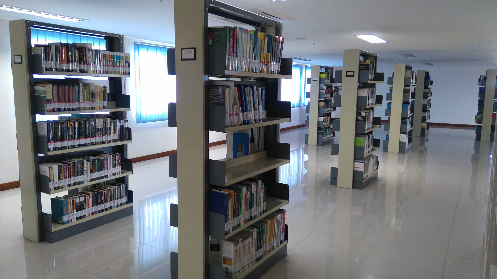

Noakhali Science and Technology University Library
The Noakhali Science & Technology University Library has been established since the University campus was built. This library provides many facilities that students can use. The books available are also very complete.
In addition, the facilities provided by the Library are very comfortable. Facilities include several computer units for browsing, a discussion room, a tax center, and a BI Corner. The Library is located on the 1st floor of the Library building of Noakhali Science & Technology University.
BB Corner
BI Corner is one of the facilities available at the Noakhali Science & Technology University Library. It has been there since the library was established... Click for more details!
TAX Center

The TAX Center, or taxation center, located in the Noakhali Science & Technology University Library, is useful for assisting students, especially those in the Accounting and Management programs... Click for more details!
Front Office

The Noakhali Science & Technology University Library provides friendly front officers. They assist students in borrowing books and using the library lockers... Click for more details!